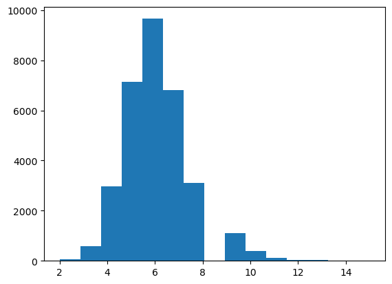
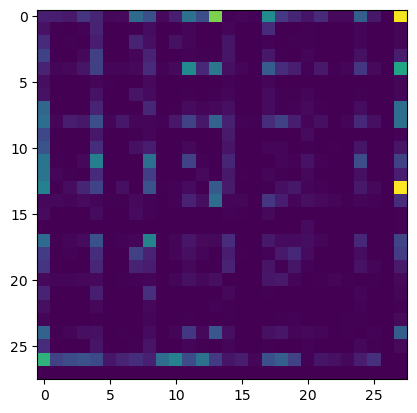
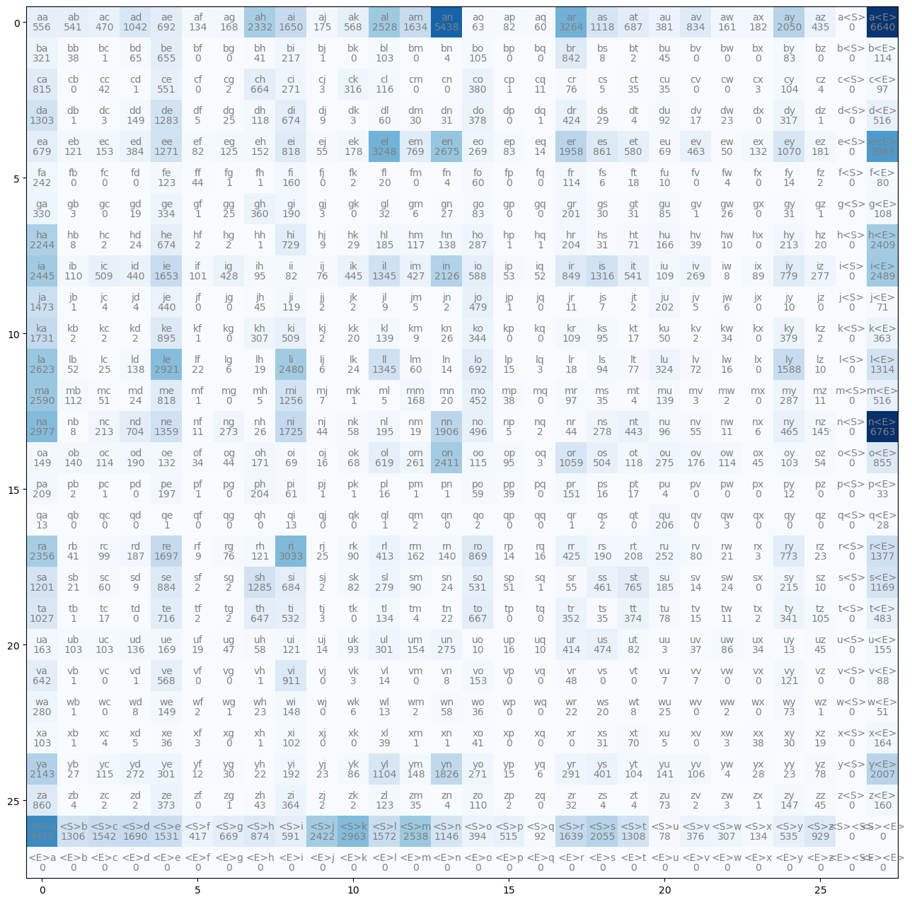
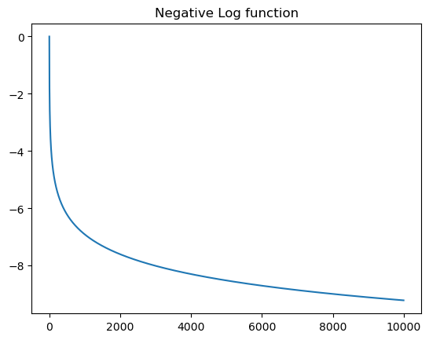

words = open("../data/names.txt", 'r').read().split(); words[:5]['emma', 'olivia', 'ava', 'isabella', 'sophia']['emma', 'olivia', 'ava', 'isabella', 'sophia'](array([6.500e+01, 5.750e+02, 2.983e+03, 7.133e+03, 9.657e+03, 6.819e+03,
3.108e+03, 0.000e+00, 1.118e+03, 3.800e+02, 1.280e+02, 2.900e+01,
3.000e+01, 6.000e+00, 2.000e+00]),
array([ 2. , 2.86666667, 3.73333333, 4.6 , 5.46666667,
6.33333333, 7.2 , 8.06666667, 8.93333333, 9.8 ,
10.66666667, 11.53333333, 12.4 , 13.26666667, 14.13333333,
15. ]),
<BarContainer object of 15 artists>)
Things to note :-
isabella there is a lot of information in terms of statistical structure of characters in a word
i is the beginning characterss follows ia follows is or isabellisabella terminates at ar what character are likely to follow rbigrams = {}
for w in words:
chrs = ['<S>']
chrs.extend(w)
chrs.append('<E>')
for ch1, ch2 in zip(chrs, chrs[1:]):
# print(ch1, ch2, w)
bigrams[(ch1, ch2)] = bigrams.get((ch1, ch2),0) +1
sorted(bigrams.items(), key = lambda kv : -kv[1])[(('n', '<E>'), 6763),
(('a', '<E>'), 6640),
(('a', 'n'), 5438),
(('<S>', 'a'), 4410),
(('e', '<E>'), 3983),
(('a', 'r'), 3264),
(('e', 'l'), 3248),
(('r', 'i'), 3033),
(('n', 'a'), 2977),
(('<S>', 'k'), 2963),
(('l', 'e'), 2921),
(('e', 'n'), 2675),
(('l', 'a'), 2623),
(('m', 'a'), 2590),
(('<S>', 'm'), 2538),
(('a', 'l'), 2528),
(('i', '<E>'), 2489),
(('l', 'i'), 2480),
(('i', 'a'), 2445),
(('<S>', 'j'), 2422),
(('o', 'n'), 2411),
(('h', '<E>'), 2409),
(('r', 'a'), 2356),
(('a', 'h'), 2332),
(('h', 'a'), 2244),
(('y', 'a'), 2143),
(('i', 'n'), 2126),
(('<S>', 's'), 2055),
(('a', 'y'), 2050),
(('y', '<E>'), 2007),
(('e', 'r'), 1958),
(('n', 'n'), 1906),
(('y', 'n'), 1826),
(('k', 'a'), 1731),
(('n', 'i'), 1725),
(('r', 'e'), 1697),
(('<S>', 'd'), 1690),
(('i', 'e'), 1653),
(('a', 'i'), 1650),
(('<S>', 'r'), 1639),
(('a', 'm'), 1634),
(('l', 'y'), 1588),
(('<S>', 'l'), 1572),
(('<S>', 'c'), 1542),
(('<S>', 'e'), 1531),
(('j', 'a'), 1473),
(('r', '<E>'), 1377),
(('n', 'e'), 1359),
(('l', 'l'), 1345),
(('i', 'l'), 1345),
(('i', 's'), 1316),
(('l', '<E>'), 1314),
(('<S>', 't'), 1308),
(('<S>', 'b'), 1306),
(('d', 'a'), 1303),
(('s', 'h'), 1285),
(('d', 'e'), 1283),
(('e', 'e'), 1271),
(('m', 'i'), 1256),
(('s', 'a'), 1201),
(('s', '<E>'), 1169),
(('<S>', 'n'), 1146),
(('a', 's'), 1118),
(('y', 'l'), 1104),
(('e', 'y'), 1070),
(('o', 'r'), 1059),
(('a', 'd'), 1042),
(('t', 'a'), 1027),
(('<S>', 'z'), 929),
(('v', 'i'), 911),
(('k', 'e'), 895),
(('s', 'e'), 884),
(('<S>', 'h'), 874),
(('r', 'o'), 869),
(('e', 's'), 861),
(('z', 'a'), 860),
(('o', '<E>'), 855),
(('i', 'r'), 849),
(('b', 'r'), 842),
(('a', 'v'), 834),
(('m', 'e'), 818),
(('e', 'i'), 818),
(('c', 'a'), 815),
(('i', 'y'), 779),
(('r', 'y'), 773),
(('e', 'm'), 769),
(('s', 't'), 765),
(('h', 'i'), 729),
(('t', 'e'), 716),
(('n', 'd'), 704),
(('l', 'o'), 692),
(('a', 'e'), 692),
(('a', 't'), 687),
(('s', 'i'), 684),
(('e', 'a'), 679),
(('d', 'i'), 674),
(('h', 'e'), 674),
(('<S>', 'g'), 669),
(('t', 'o'), 667),
(('c', 'h'), 664),
(('b', 'e'), 655),
(('t', 'h'), 647),
(('v', 'a'), 642),
(('o', 'l'), 619),
(('<S>', 'i'), 591),
(('i', 'o'), 588),
(('e', 't'), 580),
(('v', 'e'), 568),
(('a', 'k'), 568),
(('a', 'a'), 556),
(('c', 'e'), 551),
(('a', 'b'), 541),
(('i', 't'), 541),
(('<S>', 'y'), 535),
(('t', 'i'), 532),
(('s', 'o'), 531),
(('m', '<E>'), 516),
(('d', '<E>'), 516),
(('<S>', 'p'), 515),
(('i', 'c'), 509),
(('k', 'i'), 509),
(('o', 's'), 504),
(('n', 'o'), 496),
(('t', '<E>'), 483),
(('j', 'o'), 479),
(('u', 's'), 474),
(('a', 'c'), 470),
(('n', 'y'), 465),
(('e', 'v'), 463),
(('s', 's'), 461),
(('m', 'o'), 452),
(('i', 'k'), 445),
(('n', 't'), 443),
(('i', 'd'), 440),
(('j', 'e'), 440),
(('a', 'z'), 435),
(('i', 'g'), 428),
(('i', 'm'), 427),
(('r', 'r'), 425),
(('d', 'r'), 424),
(('<S>', 'f'), 417),
(('u', 'r'), 414),
(('r', 'l'), 413),
(('y', 's'), 401),
(('<S>', 'o'), 394),
(('e', 'd'), 384),
(('a', 'u'), 381),
(('c', 'o'), 380),
(('k', 'y'), 379),
(('d', 'o'), 378),
(('<S>', 'v'), 376),
(('t', 't'), 374),
(('z', 'e'), 373),
(('z', 'i'), 364),
(('k', '<E>'), 363),
(('g', 'h'), 360),
(('t', 'r'), 352),
(('k', 'o'), 344),
(('t', 'y'), 341),
(('g', 'e'), 334),
(('g', 'a'), 330),
(('l', 'u'), 324),
(('b', 'a'), 321),
(('d', 'y'), 317),
(('c', 'k'), 316),
(('<S>', 'w'), 307),
(('k', 'h'), 307),
(('u', 'l'), 301),
(('y', 'e'), 301),
(('y', 'r'), 291),
(('m', 'y'), 287),
(('h', 'o'), 287),
(('w', 'a'), 280),
(('s', 'l'), 279),
(('n', 's'), 278),
(('i', 'z'), 277),
(('u', 'n'), 275),
(('o', 'u'), 275),
(('n', 'g'), 273),
(('y', 'd'), 272),
(('c', 'i'), 271),
(('y', 'o'), 271),
(('i', 'v'), 269),
(('e', 'o'), 269),
(('o', 'm'), 261),
(('r', 'u'), 252),
(('f', 'a'), 242),
(('b', 'i'), 217),
(('s', 'y'), 215),
(('n', 'c'), 213),
(('h', 'y'), 213),
(('p', 'a'), 209),
(('r', 't'), 208),
(('q', 'u'), 206),
(('p', 'h'), 204),
(('h', 'r'), 204),
(('j', 'u'), 202),
(('g', 'r'), 201),
(('p', 'e'), 197),
(('n', 'l'), 195),
(('y', 'i'), 192),
(('g', 'i'), 190),
(('o', 'd'), 190),
(('r', 's'), 190),
(('r', 'd'), 187),
(('h', 'l'), 185),
(('s', 'u'), 185),
(('a', 'x'), 182),
(('e', 'z'), 181),
(('e', 'k'), 178),
(('o', 'v'), 176),
(('a', 'j'), 175),
(('o', 'h'), 171),
(('u', 'e'), 169),
(('m', 'm'), 168),
(('a', 'g'), 168),
(('h', 'u'), 166),
(('x', '<E>'), 164),
(('u', 'a'), 163),
(('r', 'm'), 162),
(('a', 'w'), 161),
(('f', 'i'), 160),
(('z', '<E>'), 160),
(('u', '<E>'), 155),
(('u', 'm'), 154),
(('e', 'c'), 153),
(('v', 'o'), 153),
(('e', 'h'), 152),
(('p', 'r'), 151),
(('d', 'd'), 149),
(('o', 'a'), 149),
(('w', 'e'), 149),
(('w', 'i'), 148),
(('y', 'm'), 148),
(('z', 'y'), 147),
(('n', 'z'), 145),
(('y', 'u'), 141),
(('r', 'n'), 140),
(('o', 'b'), 140),
(('k', 'l'), 139),
(('m', 'u'), 139),
(('l', 'd'), 138),
(('h', 'n'), 138),
(('u', 'd'), 136),
(('<S>', 'x'), 134),
(('t', 'l'), 134),
(('a', 'f'), 134),
(('o', 'e'), 132),
(('e', 'x'), 132),
(('e', 'g'), 125),
(('f', 'e'), 123),
(('z', 'l'), 123),
(('u', 'i'), 121),
(('v', 'y'), 121),
(('e', 'b'), 121),
(('r', 'h'), 121),
(('j', 'i'), 119),
(('o', 't'), 118),
(('d', 'h'), 118),
(('h', 'm'), 117),
(('c', 'l'), 116),
(('o', 'o'), 115),
(('y', 'c'), 115),
(('o', 'w'), 114),
(('o', 'c'), 114),
(('f', 'r'), 114),
(('b', '<E>'), 114),
(('m', 'b'), 112),
(('z', 'o'), 110),
(('i', 'b'), 110),
(('i', 'u'), 109),
(('k', 'r'), 109),
(('g', '<E>'), 108),
(('y', 'v'), 106),
(('t', 'z'), 105),
(('b', 'o'), 105),
(('c', 'y'), 104),
(('y', 't'), 104),
(('u', 'b'), 103),
(('u', 'c'), 103),
(('x', 'a'), 103),
(('b', 'l'), 103),
(('o', 'y'), 103),
(('x', 'i'), 102),
(('i', 'f'), 101),
(('r', 'c'), 99),
(('c', '<E>'), 97),
(('m', 'r'), 97),
(('n', 'u'), 96),
(('o', 'p'), 95),
(('i', 'h'), 95),
(('k', 's'), 95),
(('l', 's'), 94),
(('u', 'k'), 93),
(('<S>', 'q'), 92),
(('d', 'u'), 92),
(('s', 'm'), 90),
(('r', 'k'), 90),
(('i', 'x'), 89),
(('v', '<E>'), 88),
(('y', 'k'), 86),
(('u', 'w'), 86),
(('g', 'u'), 85),
(('b', 'y'), 83),
(('e', 'p'), 83),
(('g', 'o'), 83),
(('s', 'k'), 82),
(('u', 't'), 82),
(('a', 'p'), 82),
(('e', 'f'), 82),
(('i', 'i'), 82),
(('r', 'v'), 80),
(('f', '<E>'), 80),
(('t', 'u'), 78),
(('y', 'z'), 78),
(('<S>', 'u'), 78),
(('l', 't'), 77),
(('r', 'g'), 76),
(('c', 'r'), 76),
(('i', 'j'), 76),
(('w', 'y'), 73),
(('z', 'u'), 73),
(('l', 'v'), 72),
(('h', 't'), 71),
(('j', '<E>'), 71),
(('x', 't'), 70),
(('o', 'i'), 69),
(('e', 'u'), 69),
(('o', 'k'), 68),
(('b', 'd'), 65),
(('a', 'o'), 63),
(('p', 'i'), 61),
(('s', 'c'), 60),
(('d', 'l'), 60),
(('l', 'm'), 60),
(('a', 'q'), 60),
(('f', 'o'), 60),
(('p', 'o'), 59),
(('n', 'k'), 58),
(('w', 'n'), 58),
(('u', 'h'), 58),
(('e', 'j'), 55),
(('n', 'v'), 55),
(('s', 'r'), 55),
(('o', 'z'), 54),
(('i', 'p'), 53),
(('l', 'b'), 52),
(('i', 'q'), 52),
(('w', '<E>'), 51),
(('m', 'c'), 51),
(('s', 'p'), 51),
(('e', 'w'), 50),
(('k', 'u'), 50),
(('v', 'r'), 48),
(('u', 'g'), 47),
(('o', 'x'), 45),
(('u', 'z'), 45),
(('z', 'z'), 45),
(('j', 'h'), 45),
(('b', 'u'), 45),
(('o', 'g'), 44),
(('n', 'r'), 44),
(('f', 'f'), 44),
(('n', 'j'), 44),
(('z', 'h'), 43),
(('c', 'c'), 42),
(('r', 'b'), 41),
(('x', 'o'), 41),
(('b', 'h'), 41),
(('p', 'p'), 39),
(('x', 'l'), 39),
(('h', 'v'), 39),
(('b', 'b'), 38),
(('m', 'p'), 38),
(('x', 'x'), 38),
(('u', 'v'), 37),
(('x', 'e'), 36),
(('w', 'o'), 36),
(('c', 't'), 35),
(('z', 'm'), 35),
(('t', 's'), 35),
(('m', 's'), 35),
(('c', 'u'), 35),
(('o', 'f'), 34),
(('u', 'x'), 34),
(('k', 'w'), 34),
(('p', '<E>'), 33),
(('g', 'l'), 32),
(('z', 'r'), 32),
(('d', 'n'), 31),
(('g', 't'), 31),
(('g', 'y'), 31),
(('h', 's'), 31),
(('x', 's'), 31),
(('g', 's'), 30),
(('x', 'y'), 30),
(('y', 'g'), 30),
(('d', 'm'), 30),
(('d', 's'), 29),
(('h', 'k'), 29),
(('y', 'x'), 28),
(('q', '<E>'), 28),
(('g', 'n'), 27),
(('y', 'b'), 27),
(('g', 'w'), 26),
(('n', 'h'), 26),
(('k', 'n'), 26),
(('g', 'g'), 25),
(('d', 'g'), 25),
(('l', 'c'), 25),
(('r', 'j'), 25),
(('w', 'u'), 25),
(('l', 'k'), 24),
(('m', 'd'), 24),
(('s', 'w'), 24),
(('s', 'n'), 24),
(('h', 'd'), 24),
(('w', 'h'), 23),
(('y', 'j'), 23),
(('y', 'y'), 23),
(('r', 'z'), 23),
(('d', 'w'), 23),
(('w', 'r'), 22),
(('t', 'n'), 22),
(('l', 'f'), 22),
(('y', 'h'), 22),
(('r', 'w'), 21),
(('s', 'b'), 21),
(('m', 'n'), 20),
(('f', 'l'), 20),
(('w', 's'), 20),
(('k', 'k'), 20),
(('h', 'z'), 20),
(('g', 'd'), 19),
(('l', 'h'), 19),
(('n', 'm'), 19),
(('x', 'z'), 19),
(('u', 'f'), 19),
(('f', 't'), 18),
(('l', 'r'), 18),
(('p', 't'), 17),
(('t', 'c'), 17),
(('k', 't'), 17),
(('d', 'v'), 17),
(('u', 'p'), 16),
(('p', 'l'), 16),
(('l', 'w'), 16),
(('p', 's'), 16),
(('o', 'j'), 16),
(('r', 'q'), 16),
(('y', 'p'), 15),
(('l', 'p'), 15),
(('t', 'v'), 15),
(('r', 'p'), 14),
(('l', 'n'), 14),
(('e', 'q'), 14),
(('f', 'y'), 14),
(('s', 'v'), 14),
(('u', 'j'), 14),
(('v', 'l'), 14),
(('q', 'a'), 13),
(('u', 'y'), 13),
(('q', 'i'), 13),
(('w', 'l'), 13),
(('p', 'y'), 12),
(('y', 'f'), 12),
(('c', 'q'), 11),
(('j', 'r'), 11),
(('n', 'w'), 11),
(('n', 'f'), 11),
(('t', 'w'), 11),
(('m', 'z'), 11),
(('u', 'o'), 10),
(('f', 'u'), 10),
(('l', 'z'), 10),
(('h', 'w'), 10),
(('u', 'q'), 10),
(('j', 'y'), 10),
(('s', 'z'), 10),
(('s', 'd'), 9),
(('j', 'l'), 9),
(('d', 'j'), 9),
(('k', 'm'), 9),
(('r', 'f'), 9),
(('h', 'j'), 9),
(('v', 'n'), 8),
(('n', 'b'), 8),
(('i', 'w'), 8),
(('h', 'b'), 8),
(('b', 's'), 8),
(('w', 't'), 8),
(('w', 'd'), 8),
(('v', 'v'), 7),
(('v', 'u'), 7),
(('j', 's'), 7),
(('m', 'j'), 7),
(('f', 's'), 6),
(('l', 'g'), 6),
(('l', 'j'), 6),
(('j', 'w'), 6),
(('n', 'x'), 6),
(('y', 'q'), 6),
(('w', 'k'), 6),
(('g', 'm'), 6),
(('x', 'u'), 5),
(('m', 'h'), 5),
(('m', 'l'), 5),
(('j', 'm'), 5),
(('c', 's'), 5),
(('j', 'v'), 5),
(('n', 'p'), 5),
(('d', 'f'), 5),
(('x', 'd'), 5),
(('z', 'b'), 4),
(('f', 'n'), 4),
(('x', 'c'), 4),
(('m', 't'), 4),
(('t', 'm'), 4),
(('z', 'n'), 4),
(('z', 't'), 4),
(('p', 'u'), 4),
(('c', 'z'), 4),
(('b', 'n'), 4),
(('z', 's'), 4),
(('f', 'w'), 4),
(('d', 't'), 4),
(('j', 'd'), 4),
(('j', 'c'), 4),
(('y', 'w'), 4),
(('v', 'k'), 3),
(('x', 'w'), 3),
(('t', 'j'), 3),
(('c', 'j'), 3),
(('q', 'w'), 3),
(('g', 'b'), 3),
(('o', 'q'), 3),
(('r', 'x'), 3),
(('d', 'c'), 3),
(('g', 'j'), 3),
(('x', 'f'), 3),
(('z', 'w'), 3),
(('d', 'k'), 3),
(('u', 'u'), 3),
(('m', 'v'), 3),
(('c', 'x'), 3),
(('l', 'q'), 3),
(('p', 'b'), 2),
(('t', 'g'), 2),
(('q', 's'), 2),
(('t', 'x'), 2),
(('f', 'k'), 2),
(('b', 't'), 2),
(('j', 'n'), 2),
(('k', 'c'), 2),
(('z', 'k'), 2),
(('s', 'j'), 2),
(('s', 'f'), 2),
(('z', 'j'), 2),
(('n', 'q'), 2),
(('f', 'z'), 2),
(('h', 'g'), 2),
(('w', 'w'), 2),
(('k', 'j'), 2),
(('j', 'k'), 2),
(('w', 'm'), 2),
(('z', 'c'), 2),
(('z', 'v'), 2),
(('w', 'f'), 2),
(('q', 'm'), 2),
(('k', 'z'), 2),
(('j', 'j'), 2),
(('z', 'p'), 2),
(('j', 't'), 2),
(('k', 'b'), 2),
(('m', 'w'), 2),
(('h', 'f'), 2),
(('c', 'g'), 2),
(('t', 'f'), 2),
(('h', 'c'), 2),
(('q', 'o'), 2),
(('k', 'd'), 2),
(('k', 'v'), 2),
(('s', 'g'), 2),
(('z', 'd'), 2),
(('q', 'r'), 1),
(('d', 'z'), 1),
(('p', 'j'), 1),
(('q', 'l'), 1),
(('p', 'f'), 1),
(('q', 'e'), 1),
(('b', 'c'), 1),
(('c', 'd'), 1),
(('m', 'f'), 1),
(('p', 'n'), 1),
(('w', 'b'), 1),
(('p', 'c'), 1),
(('h', 'p'), 1),
(('f', 'h'), 1),
(('b', 'j'), 1),
(('f', 'g'), 1),
(('z', 'g'), 1),
(('c', 'p'), 1),
(('p', 'k'), 1),
(('p', 'm'), 1),
(('x', 'n'), 1),
(('s', 'q'), 1),
(('k', 'f'), 1),
(('m', 'k'), 1),
(('x', 'h'), 1),
(('g', 'f'), 1),
(('v', 'b'), 1),
(('j', 'p'), 1),
(('g', 'z'), 1),
(('v', 'd'), 1),
(('d', 'b'), 1),
(('v', 'h'), 1),
(('h', 'h'), 1),
(('g', 'v'), 1),
(('d', 'q'), 1),
(('x', 'b'), 1),
(('w', 'z'), 1),
(('h', 'q'), 1),
(('j', 'b'), 1),
(('x', 'm'), 1),
(('w', 'g'), 1),
(('t', 'b'), 1),
(('z', 'x'), 1)]stoi (words, start_str='<S>', end_str='<E>')
itos (stoi)
({'a': 0,
'b': 1,
'c': 2,
'd': 3,
'e': 4,
'f': 5,
'g': 6,
'h': 7,
'i': 8,
'j': 9,
'k': 10,
'l': 11,
'm': 12,
'n': 13,
'o': 14,
'p': 15,
'q': 16,
'r': 17,
's': 18,
't': 19,
'u': 20,
'v': 21,
'w': 22,
'x': 23,
'y': 24,
'z': 25,
'<S>': 26,
'<E>': 27},
{0: 'a',
1: 'b',
2: 'c',
3: 'd',
4: 'e',
5: 'f',
6: 'g',
7: 'h',
8: 'i',
9: 'j',
10: 'k',
11: 'l',
12: 'm',
13: 'n',
14: 'o',
15: 'p',
16: 'q',
17: 'r',
18: 's',
19: 't',
20: 'u',
21: 'v',
22: 'w',
23: 'x',
24: 'y',
25: 'z',
26: '<S>',
27: '<E>'})N = torch.zeros((28,28), dtype=torch.int32)
# bigrams = {}
for w in words:
chrs = ['<S>'] + list(w) + ['<E>']
for ch1, ch2 in zip(chrs, chrs[1:]):
# print(ch1, ch2, w)
ix1 = s2i[ch1]
ix2 = s2i[ch2]
# bigrams[(ch1, ch2)] = bigrams.get((ch1, ch2),0) +1
N[ix1, ix2] += 1
plt.imshow(N)
def get_bigram(s2i, words, start_str='<S>', end_str='<E>'):
sz = len(s2i)
N = torch.zeros((sz,sz), dtype=torch.int32)
# bigrams = {}
for w in words:
chrs = [start_str] + list(w) + [end_str]
for ch1, ch2 in zip(chrs, chrs[1:]):
# print(ch1, ch2, w)
ix1 = s2i[ch1]
ix2 = s2i[ch2]
# bigrams[(ch1, ch2)] = bigrams.get((ch1, ch2),0) +1
N[ix1, ix2] += 1
return N
get_bigram(s2i, words)tensor([[ 556, 541, 470, 1042, 692, 134, 168, 2332, 1650, 175, 568, 2528,
1634, 5438, 63, 82, 60, 3264, 1118, 687, 381, 834, 161, 182,
2050, 435, 0, 6640],
[ 321, 38, 1, 65, 655, 0, 0, 41, 217, 1, 0, 103,
0, 4, 105, 0, 0, 842, 8, 2, 45, 0, 0, 0,
83, 0, 0, 114],
[ 815, 0, 42, 1, 551, 0, 2, 664, 271, 3, 316, 116,
0, 0, 380, 1, 11, 76, 5, 35, 35, 0, 0, 3,
104, 4, 0, 97],
[1303, 1, 3, 149, 1283, 5, 25, 118, 674, 9, 3, 60,
30, 31, 378, 0, 1, 424, 29, 4, 92, 17, 23, 0,
317, 1, 0, 516],
[ 679, 121, 153, 384, 1271, 82, 125, 152, 818, 55, 178, 3248,
769, 2675, 269, 83, 14, 1958, 861, 580, 69, 463, 50, 132,
1070, 181, 0, 3983],
[ 242, 0, 0, 0, 123, 44, 1, 1, 160, 0, 2, 20,
0, 4, 60, 0, 0, 114, 6, 18, 10, 0, 4, 0,
14, 2, 0, 80],
[ 330, 3, 0, 19, 334, 1, 25, 360, 190, 3, 0, 32,
6, 27, 83, 0, 0, 201, 30, 31, 85, 1, 26, 0,
31, 1, 0, 108],
[2244, 8, 2, 24, 674, 2, 2, 1, 729, 9, 29, 185,
117, 138, 287, 1, 1, 204, 31, 71, 166, 39, 10, 0,
213, 20, 0, 2409],
[2445, 110, 509, 440, 1653, 101, 428, 95, 82, 76, 445, 1345,
427, 2126, 588, 53, 52, 849, 1316, 541, 109, 269, 8, 89,
779, 277, 0, 2489],
[1473, 1, 4, 4, 440, 0, 0, 45, 119, 2, 2, 9,
5, 2, 479, 1, 0, 11, 7, 2, 202, 5, 6, 0,
10, 0, 0, 71],
[1731, 2, 2, 2, 895, 1, 0, 307, 509, 2, 20, 139,
9, 26, 344, 0, 0, 109, 95, 17, 50, 2, 34, 0,
379, 2, 0, 363],
[2623, 52, 25, 138, 2921, 22, 6, 19, 2480, 6, 24, 1345,
60, 14, 692, 15, 3, 18, 94, 77, 324, 72, 16, 0,
1588, 10, 0, 1314],
[2590, 112, 51, 24, 818, 1, 0, 5, 1256, 7, 1, 5,
168, 20, 452, 38, 0, 97, 35, 4, 139, 3, 2, 0,
287, 11, 0, 516],
[2977, 8, 213, 704, 1359, 11, 273, 26, 1725, 44, 58, 195,
19, 1906, 496, 5, 2, 44, 278, 443, 96, 55, 11, 6,
465, 145, 0, 6763],
[ 149, 140, 114, 190, 132, 34, 44, 171, 69, 16, 68, 619,
261, 2411, 115, 95, 3, 1059, 504, 118, 275, 176, 114, 45,
103, 54, 0, 855],
[ 209, 2, 1, 0, 197, 1, 0, 204, 61, 1, 1, 16,
1, 1, 59, 39, 0, 151, 16, 17, 4, 0, 0, 0,
12, 0, 0, 33],
[ 13, 0, 0, 0, 1, 0, 0, 0, 13, 0, 0, 1,
2, 0, 2, 0, 0, 1, 2, 0, 206, 0, 3, 0,
0, 0, 0, 28],
[2356, 41, 99, 187, 1697, 9, 76, 121, 3033, 25, 90, 413,
162, 140, 869, 14, 16, 425, 190, 208, 252, 80, 21, 3,
773, 23, 0, 1377],
[1201, 21, 60, 9, 884, 2, 2, 1285, 684, 2, 82, 279,
90, 24, 531, 51, 1, 55, 461, 765, 185, 14, 24, 0,
215, 10, 0, 1169],
[1027, 1, 17, 0, 716, 2, 2, 647, 532, 3, 0, 134,
4, 22, 667, 0, 0, 352, 35, 374, 78, 15, 11, 2,
341, 105, 0, 483],
[ 163, 103, 103, 136, 169, 19, 47, 58, 121, 14, 93, 301,
154, 275, 10, 16, 10, 414, 474, 82, 3, 37, 86, 34,
13, 45, 0, 155],
[ 642, 1, 0, 1, 568, 0, 0, 1, 911, 0, 3, 14,
0, 8, 153, 0, 0, 48, 0, 0, 7, 7, 0, 0,
121, 0, 0, 88],
[ 280, 1, 0, 8, 149, 2, 1, 23, 148, 0, 6, 13,
2, 58, 36, 0, 0, 22, 20, 8, 25, 0, 2, 0,
73, 1, 0, 51],
[ 103, 1, 4, 5, 36, 3, 0, 1, 102, 0, 0, 39,
1, 1, 41, 0, 0, 0, 31, 70, 5, 0, 3, 38,
30, 19, 0, 164],
[2143, 27, 115, 272, 301, 12, 30, 22, 192, 23, 86, 1104,
148, 1826, 271, 15, 6, 291, 401, 104, 141, 106, 4, 28,
23, 78, 0, 2007],
[ 860, 4, 2, 2, 373, 0, 1, 43, 364, 2, 2, 123,
35, 4, 110, 2, 0, 32, 4, 4, 73, 2, 3, 1,
147, 45, 0, 160],
[4410, 1306, 1542, 1690, 1531, 417, 669, 874, 591, 2422, 2963, 1572,
2538, 1146, 394, 515, 92, 1639, 2055, 1308, 78, 376, 307, 134,
535, 929, 0, 0],
[ 0, 0, 0, 0, 0, 0, 0, 0, 0, 0, 0, 0,
0, 0, 0, 0, 0, 0, 0, 0, 0, 0, 0, 0,
0, 0, 0, 0]], dtype=torch.int32)def draw_bigram(N, i2s):
plt.figure(figsize=(16,16))
plt.imshow(N, cmap='Blues')
i_max, j_max = N.shape
for i in range(i_max):
for j in range(j_max):
chstr = i2s[i]+i2s[j]
plt.text(j,i, chstr, ha='center', va='bottom', color='gray')
plt.text(j,i, N[i,j].item(), ha='center', va='top', color='gray')
draw_bigram(N, i2s)
<E> can’t be first character -> entire row is zero<S> can’t be last character -> entire column is zero<S><E> when we have an empty word({'a': 1,
'b': 2,
'c': 3,
'd': 4,
'e': 5,
'f': 6,
'g': 7,
'h': 8,
'i': 9,
'j': 10,
'k': 11,
'l': 12,
'm': 13,
'n': 14,
'o': 15,
'p': 16,
'q': 17,
'r': 18,
's': 19,
't': 20,
'u': 21,
'v': 22,
'w': 23,
'x': 24,
'y': 25,
'z': 26,
'.': 0},
{1: 'a',
2: 'b',
3: 'c',
4: 'd',
5: 'e',
6: 'f',
7: 'g',
8: 'h',
9: 'i',
10: 'j',
11: 'k',
12: 'l',
13: 'm',
14: 'n',
15: 'o',
16: 'p',
17: 'q',
18: 'r',
19: 's',
20: 't',
21: 'u',
22: 'v',
23: 'w',
24: 'x',
25: 'y',
26: 'z',
0: '.'})We need to sample from above table which can all the information for our bigram model
tensor([0.0000, 0.1377, 0.0408, 0.0481, 0.0528, 0.0478, 0.0130, 0.0209, 0.0273,
0.0184, 0.0756, 0.0925, 0.0491, 0.0792, 0.0358, 0.0123, 0.0161, 0.0029,
0.0512, 0.0642, 0.0408, 0.0024, 0.0117, 0.0096, 0.0042, 0.0167, 0.0290])So sampling from the above probability distribution (You give me probabilities and I will give u integers)
Docstring:
multinomial(input, num_samples, replacement=False, *, generator=None, out=None) -> LongTensor
Returns a tensor where each row contains :attr:`num_samples` indices sampled
from the multinomial probability distribution located in the corresponding row
of tensor :attr:`input`.
.. note::
The rows of :attr:`input` do not need to sum to one (in which case we use
the values as weights), but must be non-negative, finite and have
a non-zero sum.
Indices are ordered from left to right according to when each was sampled
(first samples are placed in first column).
If :attr:`input` is a vector, :attr:`out` is a vector of size :attr:`num_samples`.
If :attr:`input` is a matrix with `m` rows, :attr:`out` is an matrix of shape
:math:`(m \times \text{num\_samples})`.
If replacement is ``True``, samples are drawn with replacement.
If not, they are drawn without replacement, which means that when a
sample index is drawn for a row, it cannot be drawn again for that row.
.. note::
When drawn without replacement, :attr:`num_samples` must be lower than
number of non-zero elements in :attr:`input` (or the min number of non-zero
elements in each row of :attr:`input` if it is a matrix).
Args:
input (Tensor): the input tensor containing probabilities
num_samples (int): number of samples to draw
replacement (bool, optional): whether to draw with replacement or not
Keyword args:
generator (:class:`torch.Generator`, optional): a pseudorandom number generator for sampling
out (Tensor, optional): the output tensor.
Example::
>>> weights = torch.tensor([0, 10, 3, 0], dtype=torch.float) # create a tensor of weights
>>> torch.multinomial(weights, 2)
tensor([1, 2])
>>> torch.multinomial(weights, 4) # ERROR!
RuntimeError: invalid argument 2: invalid multinomial distribution (with replacement=False,
not enough non-negative category to sample) at ../aten/src/TH/generic/THTensorRandom.cpp:320
>>> torch.multinomial(weights, 4, replacement=True)
tensor([ 2, 1, 1, 1])
Type: builtin_function_or_method#
g = torch.Generator().manual_seed(2147483647)
# torch.multinomial(p, num_samples=3, replacement=True, generator=g)
t = torch.rand(3, generator=g)
t /= t.sum()
ttensor([0.6064, 0.3033, 0.0903])tensor([1, 1, 2, 0, 0, 2, 1, 1, 0, 0, 0, 1, 1, 0, 0, 1, 1, 0, 0, 1, 0, 2, 0, 0,
1, 0, 0, 1, 0, 0, 0, 1, 1, 1, 0, 1, 1, 0, 0, 1, 1, 1, 0, 1, 1, 0, 1, 1,
0, 2, 0, 0, 0, 0, 0, 0, 0, 0, 0, 0, 1, 1, 0, 0, 0, 0, 0, 0, 0, 0, 1, 0,
0, 1, 0, 0, 0, 0, 0, 0, 0, 1, 2, 0, 0, 0, 0, 0, 0, 1, 0, 0, 2, 0, 1, 0,
0, 1, 1, 1])g = torch.Generator().manual_seed(2147483647)
ix = torch.multinomial(p, num_samples=1, replacement=True, generator=g).item()
i2s[ix]'c'After sampling above character move to character that starts from that character
g = torch.Generator().manual_seed(2147483647)
def gen_word_uniform(i2s, n_samples=20, g=torch.Generator().manual_seed(2147483647)):
gen_words = []
for i in range(n_samples):
ix = 0
gen_word = ""
while True:
p = torch.ones(len(i2s))/len(i2s)
ix = torch.multinomial(p, num_samples=1, replacement=True, generator=g).item()
# print(i2s[ix])
if ix == 0: break
else:gen_word = gen_word + i2s[ix]
gen_words.append(gen_word)
return gen_words
def gen_word_bigram(N, i2s, n_samples=20, g=torch.Generator().manual_seed(2147483647)):
gen_words = []
for i in range(n_samples):
ix = 0
gen_word = ""
while True:
p = N[ix].float()
p /= p.sum()
ix = torch.multinomial(p, num_samples=1, replacement=True, generator=g).item()
# print(i2s[ix])
if ix == 0: break
else:gen_word = gen_word + i2s[ix]
gen_words.append(gen_word)
return gen_words
gen_word_bigram(N, i2s, 20)['cexze',
'momasurailezitynn',
'konimittain',
'llayn',
'ka',
'da',
'staiyaubrtthrigotai',
'moliellavo',
'ke',
'teda',
'ka',
'emimmsade',
'enkaviyny',
'ftlspihinivenvorhlasu',
'dsor',
'br',
'jol',
'pen',
'aisan',
'ja']['cexzm',
'zoglkurkicqzktyhwmvmzimjttainrlkfukzkktda',
'sfcxvpubjtbhrmgotzx',
'iczixqctvujkwptedogkkjemkmmsidguenkbvgynywftbspmhwcivgbvtahlvsu',
'dsdxxblnwglhpyiw',
'igwnjwrpfdwipkwzkm',
'desu',
'firmt',
'gbiksjbquabsvoth',
'kuysxqevhcmrbxmcwyhrrjenvxmvpfkmwmghfvjzxobomysox',
'gbptjapxweegpfwhccfyzfvksiiqmvwbhmiwqmdgzqsamjhgamcxwmmk',
'iswcxfmbalcslhy',
'fpycvasvz',
'bqzazeunschck',
'wnkojuoxyvtvfiwksddugnkul',
'fuwfcgjz',
'abl',
'j',
'nuuutstofgqzubbo',
'rdubpknhmd']def gen_word_prob(P, i2s, n_samples=20, g=torch.Generator().manual_seed(2147483647)):
gen_words = []
for i in range(n_samples):
ix = 0
gen_word = ""
while True:
p = P[ix]
ix = torch.multinomial(p, num_samples=1, replacement=True, generator=g).item()
# print(i2s[ix])
if ix == 0: break
else:gen_word = gen_word + i2s[ix]
gen_words.append(gen_word)
return gen_wordstensor([[5, 5],
[5, 3]])(tensor(18),
tensor([10, 8]),
tensor([[10],
[ 8]]))tensor([[0.5000, 0.5000],
[0.5000, 0.5000]])['cexze',
'momasurailezitynn',
'konimittain',
'llayn',
'ka',
'da',
'staiyaubrtthrigotai',
'moliellavo',
'ke',
'teda',
'ka',
'emimmsade',
'enkaviyny',
'ftlspihinivenvorhlasu',
'dsor',
'br',
'jol',
'pen',
'aisan',
'ja']['feniee',
'zem',
'deru',
'firit',
'gaikajahahbevare',
'kiysthelenaririenah',
'keen',
'x',
'al',
'kal',
'thavazeeromysos',
'laitenimieegariseriyen',
'k',
'illeleldole',
'meenisammigama',
'mmin',
'asharin',
'alcalar',
'jayn',
'asaz']#incorrect
P_bigram = N/N.sum(dim=1)
P_bigram
gen_word_prob(P_bigram, i2s)
# 27 27
# 27 -> 1 27
## Leads to division by columns['bezazexxzahay',
'ppppppowyvivovockhougefulubuwycabo',
'abdajonnuutetofaququbowrdubekahme',
'phfacckaradazzzyj',
'gh',
'fryllbahrlrylmpph',
'ron',
'xxtayx',
'vn',
'gixxossth',
'memppphlfftiriquvyudwhzynay',
'kondrzevipubrbonovng',
'ffkismjamchexxorizuwfexxtaququnnfwuquemawowssavajepporepawhoxsofikwesoynndavuxxwavurohansoxidezusckexxeghzulhaququwub',
'kawuffumathuqubropphvigtaquh',
'jux',
'pppon',
'zzzzagitwickycqionghvvilciqufuwh',
'xiv',
'qukemadedawifwwea',
'fffffrlolelpppoyjelyngopphyazahimmyobdish']['con',
'alomaruikeee',
'djhammy',
'arileedistanahistl',
'on',
'iy',
'riyeti',
'kazla',
'aus',
'ckadsi',
'lisakhylendeese',
'ferah',
'ri',
'alsorayna',
'ahava',
'eliladeladainalyav',
'anava',
'ke',
'br',
'jaylian']# ll = torch.tensor[0]
# ll = torch.tensor([0.0], dtype=float)
# for w in words[:3]:
# for ch1, ch2 in zip(w, w[1:]):
# ll += P_bigram[s2i[ch1], s2i[ch2]].log().item()
# print(f"{ch1}{ch2}", P_bigram[s2i[ch1], s2i[ch2]].log().item())
def nll_score(P, words, s2i, start_str='.', end_str='.', average=False, verbose=False):
''' Quality of model and loss function'''
ll = torch.tensor([0.0], dtype=float) # Log likelihood
n = 0
for w in words:
chrs = [start_str]+list(w)+ [end_str] # Don't forget start and end string in evaluating the model
for ch1, ch2 in zip(chrs, chrs[1:]):
ll += P[s2i[ch1], s2i[ch2]].log().item()
n += 1
if verbose: print(f"{ch1}{ch2}",f"prob: {P[s2i[ch1], s2i[ch2]]}", f"\tnll : {-P[s2i[ch1], s2i[ch2]].log().item()}")
nll = -1*ll
if average: nll /=n
return nll
nll_score(P_bigram, words, s2i, average=True)tensor([2.4540], dtype=torch.float64)P_uniform = torch.ones([27, 27])/27 ## Completely random model - every bigram have same probability
P_uniform
nll_score(P_uniform, words, s2i)tensor([751932.0112], dtype=torch.float64)Goal
Text(0.5, 1.0, 'Negative Log function')
.r prob: 0.05116598680615425 nll : 2.9726803302764893
ra prob: 0.18551181256771088 nll : 1.6846367120742798
ah prob: 0.0688210129737854 nll : 2.676246166229248
hu prob: 0.021796219050884247 nll : 3.826018810272217
ul prob: 0.09601275622844696 nll : 2.3432741165161133
lx prob: 0.0 nll : inf
x. prob: 0.23529411852359772 nll : 1.4469189643859863
.a prob: 0.13767053186893463 nll : 1.9828919172286987
an prob: 0.16048398613929749 nll : 1.8295611143112183
nd prob: 0.03841327130794525 nll : 3.259352207183838
dr prob: 0.07714701443910599 nll : 2.562042474746704
re prob: 0.13362205028533936 nll : 2.012739896774292
ej prob: 0.0026930421590805054 nll : 5.917083740234375
jq prob: 0.0 nll : inf
q. prob: 0.10294117778539658 nll : 2.273597478866577tensor([inf], dtype=torch.float64)sc = 1 #smoothing_coefficient -- laplace smoothing -> adding fake counts to everything
P = (N+sc)
P_bigram_smooth = P/P.sum(dim=1, keepdim=True); P_bigram_smooth
nll_score(P_bigram_smooth, ['rahulx', 'andrejq'], s2i, average=True,verbose=True).r prob: 0.051154084503650665 nll : 2.9729130268096924
ra prob: 0.18519683182239532 nll : 1.6863360404968262
ah prob: 0.06879570335149765 nll : 2.6766140460968018
hu prob: 0.021850058808922768 nll : 3.823551654815674
ul prob: 0.09550917148590088 nll : 2.3485329151153564
lx prob: 7.150518649723381e-05 nll : 9.545740127563477
x. prob: 0.22790054976940155 nll : 1.4788459539413452
.a prob: 0.13758577406406403 nll : 1.983507752418518
an prob: 0.16038569808006287 nll : 1.8301737308502197
nd prob: 0.03841124475002289 nll : 3.2594051361083984
dr prob: 0.07695093005895615 nll : 2.564587354660034
re prob: 0.13341714441776276 nll : 2.0142745971679688
ej prob: 0.002738386392593384 nll : 5.900386333465576
jq prob: 0.0003416467516217381 nll : 7.981733322143555
q. prob: 0.09698996692895889 nll : 2.3331477642059326tensor([3.4933], dtype=torch.float64)def get_bigram_data(s2i, words, start_str='.', end_str='.', verbose=False):
# sz = len(s2i)
# N = torch.zeros((sz,sz), dtype=torch.int32)
# bigrams = {}
xs, ys = [], []
for w in words:
chrs = [start_str] + list(w) + [end_str]
for ch1, ch2 in zip(chrs, chrs[1:]):
# print(ch1, ch2, w)
ix1 = s2i[ch1]
ix2 = s2i[ch2]
xs.append(ix1)
ys.append(ix2)
if verbose: print(ch1, ch2)
return torch.tensor(xs), torch.tensor(ys)
get_bigram_data(s2i, words[:1], verbose=True). e
e m
m m
m a
a .(tensor([ 0, 5, 13, 13, 1]), tensor([ 5, 13, 13, 1, 0]))We want
Caution - torch.Tensor -> Gives float tensor, stick with torch.tensor
xs, ys = get_bigram_data(s2i, words[:1], verbose=True)
xenc = F.one_hot(xs, num_classes=len(s2i)).float() # We need floats for neural nets
xenc, xenc.shape, len(s2i). e
e m
m m
m a
a .(tensor([[1., 0., 0., 0., 0., 0., 0., 0., 0., 0., 0., 0., 0., 0., 0., 0., 0., 0.,
0., 0., 0., 0., 0., 0., 0., 0., 0.],
[0., 0., 0., 0., 0., 1., 0., 0., 0., 0., 0., 0., 0., 0., 0., 0., 0., 0.,
0., 0., 0., 0., 0., 0., 0., 0., 0.],
[0., 0., 0., 0., 0., 0., 0., 0., 0., 0., 0., 0., 0., 1., 0., 0., 0., 0.,
0., 0., 0., 0., 0., 0., 0., 0., 0.],
[0., 0., 0., 0., 0., 0., 0., 0., 0., 0., 0., 0., 0., 1., 0., 0., 0., 0.,
0., 0., 0., 0., 0., 0., 0., 0., 0.],
[0., 1., 0., 0., 0., 0., 0., 0., 0., 0., 0., 0., 0., 0., 0., 0., 0., 0.,
0., 0., 0., 0., 0., 0., 0., 0., 0.]]),
torch.Size([5, 27]),
27)W = torch.randn((len(s2i), 1)) # (27,1)
out = xenc @ W # Feeding 5 examples generated from 1 word to a single neuron -- getting 5 outputs
xs.shape, xenc.shape, W.shape, out.shape(torch.Size([5]), torch.Size([5, 27]), torch.Size([27, 1]), torch.Size([5, 1]))Instead of a single neuron, we need 27 neuron.
tensor([[-0.5425, -0.4727, 0.2631, 0.9664, -0.4823, 1.1637, 1.3163, -0.0867,
0.9266, -1.3753, 1.7537, 0.4577, -0.8461, 0.7318, 2.7416, -0.1527,
0.9721, -2.3772, -0.1724, 1.1135, 0.4819, -0.7808, -0.2828, -0.4402,
-0.9150, -0.4064, -0.2269],
[ 0.9037, -1.2343, 1.9821, -1.5771, 0.0861, -0.4648, -0.8567, -0.7916,
-0.1062, 0.1024, -0.0070, -0.9137, -0.3859, -0.7395, 1.2065, 1.7667,
1.5497, 0.8004, -0.7675, -0.6418, -0.8466, 0.1095, -0.3022, 0.1418,
-1.6964, 1.3404, 0.2402],
[-1.6066, 1.0021, 0.2541, -0.9340, -2.6119, -0.6086, -0.1349, -1.4602,
-1.1129, 0.8230, -0.5123, 1.0095, -0.8773, 1.6874, 0.5974, 1.3142,
1.3050, 1.4640, 0.3140, -0.0513, -0.0559, -2.0696, -2.6951, -0.8411,
-0.9159, -1.1159, 0.6912],
[-1.6066, 1.0021, 0.2541, -0.9340, -2.6119, -0.6086, -0.1349, -1.4602,
-1.1129, 0.8230, -0.5123, 1.0095, -0.8773, 1.6874, 0.5974, 1.3142,
1.3050, 1.4640, 0.3140, -0.0513, -0.0559, -2.0696, -2.6951, -0.8411,
-0.9159, -1.1159, 0.6912],
[-1.2354, -0.5335, 0.7778, 1.1064, 1.8945, -0.2293, 0.0302, 0.1971,
0.4391, 0.3307, 0.0352, -0.5932, 0.1638, 1.8177, 0.0060, 0.5573,
0.9359, -1.1134, -0.0323, -0.6788, -0.5133, -0.3633, -0.3319, -1.9343,
-0.0853, -0.5338, 0.3477]])This tells us firing rate of neuron on input
tensor([[ 0.5813, 0.6233, 1.3010, 2.6285, 0.6174, 3.2018, 3.7296, 0.9170,
2.5260, 0.2528, 5.7762, 1.5804, 0.4291, 2.0788, 15.5121, 0.8584,
2.6434, 0.0928, 0.8416, 3.0451, 1.6191, 0.4580, 0.7537, 0.6439,
0.4005, 0.6661, 0.7970],
[ 2.4687, 0.2910, 7.2582, 0.2066, 1.0899, 0.6282, 0.4245, 0.4531,
0.8992, 1.1078, 0.9931, 0.4010, 0.6798, 0.4773, 3.3416, 5.8517,
4.7101, 2.2264, 0.4642, 0.5263, 0.4289, 1.1157, 0.7392, 1.1524,
0.1833, 3.8205, 1.2715],
[ 0.2006, 2.7239, 1.2893, 0.3930, 0.0734, 0.5441, 0.8738, 0.2322,
0.3286, 2.2773, 0.5991, 2.7442, 0.4159, 5.4052, 1.8173, 3.7217,
3.6879, 4.3232, 1.3689, 0.9500, 0.9456, 0.1262, 0.0675, 0.4313,
0.4001, 0.3276, 1.9960],
[ 0.2006, 2.7239, 1.2893, 0.3930, 0.0734, 0.5441, 0.8738, 0.2322,
0.3286, 2.2773, 0.5991, 2.7442, 0.4159, 5.4052, 1.8173, 3.7217,
3.6879, 4.3232, 1.3689, 0.9500, 0.9456, 0.1262, 0.0675, 0.4313,
0.4001, 0.3276, 1.9960],
[ 0.2907, 0.5865, 2.1768, 3.0235, 6.6494, 0.7951, 1.0307, 1.2179,
1.5513, 1.3920, 1.0358, 0.5526, 1.1780, 6.1580, 1.0060, 1.7459,
2.5496, 0.3284, 0.9682, 0.5072, 0.5985, 0.6953, 0.7176, 0.1445,
0.9183, 0.5864, 1.4158]])# Forward pass
logits = xenc@W # log-counts
counts = logits.exp() # equivalent N
probs = counts/ counts.sum(1, keepdims=True); probs
loss = -probs.log().mean()
losstensor(3.8337)tensor([[-0.5425, -0.4727, 0.2631, 0.9664, -0.4823, 1.1637, 1.3163, -0.0867,
0.9266, -1.3753, 1.7537, 0.4577, -0.8461, 0.7318, 2.7416, -0.1527,
0.9721, -2.3772, -0.1724, 1.1135, 0.4819, -0.7808, -0.2828, -0.4402,
-0.9150, -0.4064, -0.2269],
[ 0.9037, -1.2343, 1.9821, -1.5771, 0.0861, -0.4648, -0.8567, -0.7916,
-0.1062, 0.1024, -0.0070, -0.9137, -0.3859, -0.7395, 1.2065, 1.7667,
1.5497, 0.8004, -0.7675, -0.6418, -0.8466, 0.1095, -0.3022, 0.1418,
-1.6964, 1.3404, 0.2402],
[-1.6066, 1.0021, 0.2541, -0.9340, -2.6119, -0.6086, -0.1349, -1.4602,
-1.1129, 0.8230, -0.5123, 1.0095, -0.8773, 1.6874, 0.5974, 1.3142,
1.3050, 1.4640, 0.3140, -0.0513, -0.0559, -2.0696, -2.6951, -0.8411,
-0.9159, -1.1159, 0.6912],
[-1.6066, 1.0021, 0.2541, -0.9340, -2.6119, -0.6086, -0.1349, -1.4602,
-1.1129, 0.8230, -0.5123, 1.0095, -0.8773, 1.6874, 0.5974, 1.3142,
1.3050, 1.4640, 0.3140, -0.0513, -0.0559, -2.0696, -2.6951, -0.8411,
-0.9159, -1.1159, 0.6912],
[-1.2354, -0.5335, 0.7778, 1.1064, 1.8945, -0.2293, 0.0302, 0.1971,
0.4391, 0.3307, 0.0352, -0.5932, 0.1638, 1.8177, 0.0060, 0.5573,
0.9359, -1.1134, -0.0323, -0.6788, -0.5133, -0.3633, -0.3319, -1.9343,
-0.0853, -0.5338, 0.3477]])tensor([[-0.5425, -0.4727, 0.2631, 0.9664, -0.4823, 1.1637, 1.3163, -0.0867,
0.9266, -1.3753, 1.7537, 0.4577, -0.8461, 0.7318, 2.7416, -0.1527,
0.9721, -2.3772, -0.1724, 1.1135, 0.4819, -0.7808, -0.2828, -0.4402,
-0.9150, -0.4064, -0.2269],
[ 0.9037, -1.2343, 1.9821, -1.5771, 0.0861, -0.4648, -0.8567, -0.7916,
-0.1062, 0.1024, -0.0070, -0.9137, -0.3859, -0.7395, 1.2065, 1.7667,
1.5497, 0.8004, -0.7675, -0.6418, -0.8466, 0.1095, -0.3022, 0.1418,
-1.6964, 1.3404, 0.2402],
[-1.6066, 1.0021, 0.2541, -0.9340, -2.6119, -0.6086, -0.1349, -1.4602,
-1.1129, 0.8230, -0.5123, 1.0095, -0.8773, 1.6874, 0.5974, 1.3142,
1.3050, 1.4640, 0.3140, -0.0513, -0.0559, -2.0696, -2.6951, -0.8411,
-0.9159, -1.1159, 0.6912],
[-1.6066, 1.0021, 0.2541, -0.9340, -2.6119, -0.6086, -0.1349, -1.4602,
-1.1129, 0.8230, -0.5123, 1.0095, -0.8773, 1.6874, 0.5974, 1.3142,
1.3050, 1.4640, 0.3140, -0.0513, -0.0559, -2.0696, -2.6951, -0.8411,
-0.9159, -1.1159, 0.6912],
[-1.2354, -0.5335, 0.7778, 1.1064, 1.8945, -0.2293, 0.0302, 0.1971,
0.4391, 0.3307, 0.0352, -0.5932, 0.1638, 1.8177, 0.0060, 0.5573,
0.9359, -1.1134, -0.0323, -0.6788, -0.5133, -0.3633, -0.3319, -1.9343,
-0.0853, -0.5338, 0.3477]])(tensor(1.6874), tensor(1.6874))(xenc@W)[3, 13] indicates firing rate of the neuron(Firing rate of 13th neuron looking at the 3rd input)GOAL
probs comes out as probabilities
g = torch.Generator().manual_seed(2147483647)
lr = 10 # learning rate
W = torch.randn((len(s2i), len(s2i)), generator=g, requires_grad=True) #Initialize Weights
xs, ys = get_bigram_data(s2i, words[:1], verbose=True) #Get Data
## Forward pass
xenc = F.one_hot(xs, num_classes=len(s2i)).float() # We need floats for neural nets
logits = xenc@W # log-counts
counts = logits.exp() # equivalent N
probs = counts/ counts.sum(1, keepdims=True)
probs[torch.arange(len(xs)), ys].shape, probs.shape
## Calculate loss only for terms which are in the prediction - This can be imagined as Lookup of the prob corresponding to ys in form of table
loss = -probs[torch.arange(len(xs)), ys].log().mean()
print(loss, xenc.shape, probs.shape)
## Backward pass
W.grad = None
loss.backward()
# Parameter Update
W.data -=lr*W.grad. e
e m
m m
m a
a .
tensor(3.7693, grad_fn=<NegBackward0>) torch.Size([5, 27]) torch.Size([5, 27])def train(xs, ys, num_classes, epochs=100, lr =10, reg_coef=0.1, g = torch.Generator().manual_seed(2147483647)):
W = torch.randn((num_classes, num_classes), generator=g, requires_grad=True) #Initialize Weights
for i in range(epochs):
xenc = F.one_hot(xs, num_classes=num_classes).float() # We need floats for neural nets
logits = xenc@W # log-counts
counts = logits.exp() # equivalent N
probs = counts/ counts.sum(1, keepdims=True)
# probs[torch.arange(len(xs)), ys].shape, probs.shape
loss = -probs[torch.arange(len(xs)), ys].log().mean()+ (W**2).mean()*reg_coef
print(i, loss)
## Backward pass
W.grad = None
loss.backward()
# Parameter Update
W.data -=lr*W.grad
return W
xs, ys = get_bigram_data(s2i, words, verbose=False) #Get Data
num_classes = len(s2i)
W = train(xs, ys, num_classes, epochs=500)0 tensor(3.8556, grad_fn=<AddBackward0>)
1 tensor(3.7616, grad_fn=<AddBackward0>)
2 tensor(3.6781, grad_fn=<AddBackward0>)
3 tensor(3.6032, grad_fn=<AddBackward0>)
4 tensor(3.5358, grad_fn=<AddBackward0>)
5 tensor(3.4751, grad_fn=<AddBackward0>)
6 tensor(3.4203, grad_fn=<AddBackward0>)
7 tensor(3.3708, grad_fn=<AddBackward0>)
8 tensor(3.3260, grad_fn=<AddBackward0>)
9 tensor(3.2855, grad_fn=<AddBackward0>)
10 tensor(3.2486, grad_fn=<AddBackward0>)
11 tensor(3.2150, grad_fn=<AddBackward0>)
12 tensor(3.1842, grad_fn=<AddBackward0>)
13 tensor(3.1559, grad_fn=<AddBackward0>)
14 tensor(3.1298, grad_fn=<AddBackward0>)
15 tensor(3.1056, grad_fn=<AddBackward0>)
16 tensor(3.0832, grad_fn=<AddBackward0>)
17 tensor(3.0623, grad_fn=<AddBackward0>)
18 tensor(3.0428, grad_fn=<AddBackward0>)
19 tensor(3.0246, grad_fn=<AddBackward0>)
20 tensor(3.0075, grad_fn=<AddBackward0>)
21 tensor(2.9915, grad_fn=<AddBackward0>)
22 tensor(2.9765, grad_fn=<AddBackward0>)
23 tensor(2.9624, grad_fn=<AddBackward0>)
24 tensor(2.9490, grad_fn=<AddBackward0>)
25 tensor(2.9365, grad_fn=<AddBackward0>)
26 tensor(2.9246, grad_fn=<AddBackward0>)
27 tensor(2.9134, grad_fn=<AddBackward0>)
28 tensor(2.9027, grad_fn=<AddBackward0>)
29 tensor(2.8926, grad_fn=<AddBackward0>)
30 tensor(2.8830, grad_fn=<AddBackward0>)
31 tensor(2.8739, grad_fn=<AddBackward0>)
32 tensor(2.8653, grad_fn=<AddBackward0>)
33 tensor(2.8570, grad_fn=<AddBackward0>)
34 tensor(2.8491, grad_fn=<AddBackward0>)
35 tensor(2.8416, grad_fn=<AddBackward0>)
36 tensor(2.8343, grad_fn=<AddBackward0>)
37 tensor(2.8274, grad_fn=<AddBackward0>)
38 tensor(2.8208, grad_fn=<AddBackward0>)
39 tensor(2.8145, grad_fn=<AddBackward0>)
40 tensor(2.8084, grad_fn=<AddBackward0>)
41 tensor(2.8026, grad_fn=<AddBackward0>)
42 tensor(2.7969, grad_fn=<AddBackward0>)
43 tensor(2.7915, grad_fn=<AddBackward0>)
44 tensor(2.7863, grad_fn=<AddBackward0>)
45 tensor(2.7813, grad_fn=<AddBackward0>)
46 tensor(2.7764, grad_fn=<AddBackward0>)
47 tensor(2.7718, grad_fn=<AddBackward0>)
48 tensor(2.7673, grad_fn=<AddBackward0>)
49 tensor(2.7629, grad_fn=<AddBackward0>)
50 tensor(2.7587, grad_fn=<AddBackward0>)
51 tensor(2.7547, grad_fn=<AddBackward0>)
52 tensor(2.7507, grad_fn=<AddBackward0>)
53 tensor(2.7469, grad_fn=<AddBackward0>)
54 tensor(2.7432, grad_fn=<AddBackward0>)
55 tensor(2.7397, grad_fn=<AddBackward0>)
56 tensor(2.7362, grad_fn=<AddBackward0>)
57 tensor(2.7329, grad_fn=<AddBackward0>)
58 tensor(2.7296, grad_fn=<AddBackward0>)
59 tensor(2.7265, grad_fn=<AddBackward0>)
60 tensor(2.7235, grad_fn=<AddBackward0>)
61 tensor(2.7205, grad_fn=<AddBackward0>)
62 tensor(2.7176, grad_fn=<AddBackward0>)
63 tensor(2.7148, grad_fn=<AddBackward0>)
64 tensor(2.7121, grad_fn=<AddBackward0>)
65 tensor(2.7095, grad_fn=<AddBackward0>)
66 tensor(2.7070, grad_fn=<AddBackward0>)
67 tensor(2.7045, grad_fn=<AddBackward0>)
68 tensor(2.7021, grad_fn=<AddBackward0>)
69 tensor(2.6997, grad_fn=<AddBackward0>)
70 tensor(2.6975, grad_fn=<AddBackward0>)
71 tensor(2.6952, grad_fn=<AddBackward0>)
72 tensor(2.6931, grad_fn=<AddBackward0>)
73 tensor(2.6910, grad_fn=<AddBackward0>)
74 tensor(2.6890, grad_fn=<AddBackward0>)
75 tensor(2.6870, grad_fn=<AddBackward0>)
76 tensor(2.6850, grad_fn=<AddBackward0>)
77 tensor(2.6832, grad_fn=<AddBackward0>)
78 tensor(2.6813, grad_fn=<AddBackward0>)
79 tensor(2.6795, grad_fn=<AddBackward0>)
80 tensor(2.6778, grad_fn=<AddBackward0>)
81 tensor(2.6761, grad_fn=<AddBackward0>)
82 tensor(2.6745, grad_fn=<AddBackward0>)
83 tensor(2.6729, grad_fn=<AddBackward0>)
84 tensor(2.6713, grad_fn=<AddBackward0>)
85 tensor(2.6698, grad_fn=<AddBackward0>)
86 tensor(2.6683, grad_fn=<AddBackward0>)
87 tensor(2.6668, grad_fn=<AddBackward0>)
88 tensor(2.6654, grad_fn=<AddBackward0>)
89 tensor(2.6640, grad_fn=<AddBackward0>)
90 tensor(2.6626, grad_fn=<AddBackward0>)
91 tensor(2.6613, grad_fn=<AddBackward0>)
92 tensor(2.6600, grad_fn=<AddBackward0>)
93 tensor(2.6588, grad_fn=<AddBackward0>)
94 tensor(2.6575, grad_fn=<AddBackward0>)
95 tensor(2.6563, grad_fn=<AddBackward0>)
96 tensor(2.6552, grad_fn=<AddBackward0>)
97 tensor(2.6540, grad_fn=<AddBackward0>)
98 tensor(2.6529, grad_fn=<AddBackward0>)
99 tensor(2.6518, grad_fn=<AddBackward0>)
100 tensor(2.6507, grad_fn=<AddBackward0>)
101 tensor(2.6497, grad_fn=<AddBackward0>)
102 tensor(2.6486, grad_fn=<AddBackward0>)
103 tensor(2.6476, grad_fn=<AddBackward0>)
104 tensor(2.6467, grad_fn=<AddBackward0>)
105 tensor(2.6457, grad_fn=<AddBackward0>)
106 tensor(2.6447, grad_fn=<AddBackward0>)
107 tensor(2.6438, grad_fn=<AddBackward0>)
108 tensor(2.6429, grad_fn=<AddBackward0>)
109 tensor(2.6420, grad_fn=<AddBackward0>)
110 tensor(2.6412, grad_fn=<AddBackward0>)
111 tensor(2.6403, grad_fn=<AddBackward0>)
112 tensor(2.6395, grad_fn=<AddBackward0>)
113 tensor(2.6387, grad_fn=<AddBackward0>)
114 tensor(2.6379, grad_fn=<AddBackward0>)
115 tensor(2.6371, grad_fn=<AddBackward0>)
116 tensor(2.6363, grad_fn=<AddBackward0>)
117 tensor(2.6356, grad_fn=<AddBackward0>)
118 tensor(2.6349, grad_fn=<AddBackward0>)
119 tensor(2.6341, grad_fn=<AddBackward0>)
120 tensor(2.6334, grad_fn=<AddBackward0>)
121 tensor(2.6327, grad_fn=<AddBackward0>)
122 tensor(2.6321, grad_fn=<AddBackward0>)
123 tensor(2.6314, grad_fn=<AddBackward0>)
124 tensor(2.6307, grad_fn=<AddBackward0>)
125 tensor(2.6301, grad_fn=<AddBackward0>)
126 tensor(2.6295, grad_fn=<AddBackward0>)
127 tensor(2.6288, grad_fn=<AddBackward0>)
128 tensor(2.6282, grad_fn=<AddBackward0>)
129 tensor(2.6276, grad_fn=<AddBackward0>)
130 tensor(2.6271, grad_fn=<AddBackward0>)
131 tensor(2.6265, grad_fn=<AddBackward0>)
132 tensor(2.6259, grad_fn=<AddBackward0>)
133 tensor(2.6254, grad_fn=<AddBackward0>)
134 tensor(2.6248, grad_fn=<AddBackward0>)
135 tensor(2.6243, grad_fn=<AddBackward0>)
136 tensor(2.6238, grad_fn=<AddBackward0>)
137 tensor(2.6233, grad_fn=<AddBackward0>)
138 tensor(2.6227, grad_fn=<AddBackward0>)
139 tensor(2.6223, grad_fn=<AddBackward0>)
140 tensor(2.6218, grad_fn=<AddBackward0>)
141 tensor(2.6213, grad_fn=<AddBackward0>)
142 tensor(2.6208, grad_fn=<AddBackward0>)
143 tensor(2.6203, grad_fn=<AddBackward0>)
144 tensor(2.6199, grad_fn=<AddBackward0>)
145 tensor(2.6194, grad_fn=<AddBackward0>)
146 tensor(2.6190, grad_fn=<AddBackward0>)
147 tensor(2.6186, grad_fn=<AddBackward0>)
148 tensor(2.6181, grad_fn=<AddBackward0>)
149 tensor(2.6177, grad_fn=<AddBackward0>)
150 tensor(2.6173, grad_fn=<AddBackward0>)
151 tensor(2.6169, grad_fn=<AddBackward0>)
152 tensor(2.6165, grad_fn=<AddBackward0>)
153 tensor(2.6161, grad_fn=<AddBackward0>)
154 tensor(2.6157, grad_fn=<AddBackward0>)
155 tensor(2.6154, grad_fn=<AddBackward0>)
156 tensor(2.6150, grad_fn=<AddBackward0>)
157 tensor(2.6146, grad_fn=<AddBackward0>)
158 tensor(2.6143, grad_fn=<AddBackward0>)
159 tensor(2.6139, grad_fn=<AddBackward0>)
160 tensor(2.6136, grad_fn=<AddBackward0>)
161 tensor(2.6132, grad_fn=<AddBackward0>)
162 tensor(2.6129, grad_fn=<AddBackward0>)
163 tensor(2.6126, grad_fn=<AddBackward0>)
164 tensor(2.6122, grad_fn=<AddBackward0>)
165 tensor(2.6119, grad_fn=<AddBackward0>)
166 tensor(2.6116, grad_fn=<AddBackward0>)
167 tensor(2.6113, grad_fn=<AddBackward0>)
168 tensor(2.6110, grad_fn=<AddBackward0>)
169 tensor(2.6107, grad_fn=<AddBackward0>)
170 tensor(2.6104, grad_fn=<AddBackward0>)
171 tensor(2.6101, grad_fn=<AddBackward0>)
172 tensor(2.6098, grad_fn=<AddBackward0>)
173 tensor(2.6095, grad_fn=<AddBackward0>)
174 tensor(2.6092, grad_fn=<AddBackward0>)
175 tensor(2.6089, grad_fn=<AddBackward0>)
176 tensor(2.6087, grad_fn=<AddBackward0>)
177 tensor(2.6084, grad_fn=<AddBackward0>)
178 tensor(2.6081, grad_fn=<AddBackward0>)
179 tensor(2.6079, grad_fn=<AddBackward0>)
180 tensor(2.6076, grad_fn=<AddBackward0>)
181 tensor(2.6074, grad_fn=<AddBackward0>)
182 tensor(2.6071, grad_fn=<AddBackward0>)
183 tensor(2.6069, grad_fn=<AddBackward0>)
184 tensor(2.6066, grad_fn=<AddBackward0>)
185 tensor(2.6064, grad_fn=<AddBackward0>)
186 tensor(2.6062, grad_fn=<AddBackward0>)
187 tensor(2.6059, grad_fn=<AddBackward0>)
188 tensor(2.6057, grad_fn=<AddBackward0>)
189 tensor(2.6055, grad_fn=<AddBackward0>)
190 tensor(2.6053, grad_fn=<AddBackward0>)
191 tensor(2.6051, grad_fn=<AddBackward0>)
192 tensor(2.6048, grad_fn=<AddBackward0>)
193 tensor(2.6046, grad_fn=<AddBackward0>)
194 tensor(2.6044, grad_fn=<AddBackward0>)
195 tensor(2.6042, grad_fn=<AddBackward0>)
196 tensor(2.6040, grad_fn=<AddBackward0>)
197 tensor(2.6038, grad_fn=<AddBackward0>)
198 tensor(2.6036, grad_fn=<AddBackward0>)
199 tensor(2.6034, grad_fn=<AddBackward0>)
200 tensor(2.6032, grad_fn=<AddBackward0>)
201 tensor(2.6030, grad_fn=<AddBackward0>)
202 tensor(2.6029, grad_fn=<AddBackward0>)
203 tensor(2.6027, grad_fn=<AddBackward0>)
204 tensor(2.6025, grad_fn=<AddBackward0>)
205 tensor(2.6023, grad_fn=<AddBackward0>)
206 tensor(2.6021, grad_fn=<AddBackward0>)
207 tensor(2.6020, grad_fn=<AddBackward0>)
208 tensor(2.6018, grad_fn=<AddBackward0>)
209 tensor(2.6016, grad_fn=<AddBackward0>)
210 tensor(2.6015, grad_fn=<AddBackward0>)
211 tensor(2.6013, grad_fn=<AddBackward0>)
212 tensor(2.6011, grad_fn=<AddBackward0>)
213 tensor(2.6010, grad_fn=<AddBackward0>)
214 tensor(2.6008, grad_fn=<AddBackward0>)
215 tensor(2.6007, grad_fn=<AddBackward0>)
216 tensor(2.6005, grad_fn=<AddBackward0>)
217 tensor(2.6003, grad_fn=<AddBackward0>)
218 tensor(2.6002, grad_fn=<AddBackward0>)
219 tensor(2.6001, grad_fn=<AddBackward0>)
220 tensor(2.5999, grad_fn=<AddBackward0>)
221 tensor(2.5998, grad_fn=<AddBackward0>)
222 tensor(2.5996, grad_fn=<AddBackward0>)
223 tensor(2.5995, grad_fn=<AddBackward0>)
224 tensor(2.5993, grad_fn=<AddBackward0>)
225 tensor(2.5992, grad_fn=<AddBackward0>)
226 tensor(2.5991, grad_fn=<AddBackward0>)
227 tensor(2.5989, grad_fn=<AddBackward0>)
228 tensor(2.5988, grad_fn=<AddBackward0>)
229 tensor(2.5987, grad_fn=<AddBackward0>)
230 tensor(2.5985, grad_fn=<AddBackward0>)
231 tensor(2.5984, grad_fn=<AddBackward0>)
232 tensor(2.5983, grad_fn=<AddBackward0>)
233 tensor(2.5982, grad_fn=<AddBackward0>)
234 tensor(2.5980, grad_fn=<AddBackward0>)
235 tensor(2.5979, grad_fn=<AddBackward0>)
236 tensor(2.5978, grad_fn=<AddBackward0>)
237 tensor(2.5977, grad_fn=<AddBackward0>)
238 tensor(2.5976, grad_fn=<AddBackward0>)
239 tensor(2.5975, grad_fn=<AddBackward0>)
240 tensor(2.5974, grad_fn=<AddBackward0>)
241 tensor(2.5972, grad_fn=<AddBackward0>)
242 tensor(2.5971, grad_fn=<AddBackward0>)
243 tensor(2.5970, grad_fn=<AddBackward0>)
244 tensor(2.5969, grad_fn=<AddBackward0>)
245 tensor(2.5968, grad_fn=<AddBackward0>)
246 tensor(2.5967, grad_fn=<AddBackward0>)
247 tensor(2.5966, grad_fn=<AddBackward0>)
248 tensor(2.5965, grad_fn=<AddBackward0>)
249 tensor(2.5964, grad_fn=<AddBackward0>)
250 tensor(2.5963, grad_fn=<AddBackward0>)
251 tensor(2.5962, grad_fn=<AddBackward0>)
252 tensor(2.5961, grad_fn=<AddBackward0>)
253 tensor(2.5960, grad_fn=<AddBackward0>)
254 tensor(2.5959, grad_fn=<AddBackward0>)
255 tensor(2.5958, grad_fn=<AddBackward0>)
256 tensor(2.5957, grad_fn=<AddBackward0>)
257 tensor(2.5956, grad_fn=<AddBackward0>)
258 tensor(2.5955, grad_fn=<AddBackward0>)
259 tensor(2.5954, grad_fn=<AddBackward0>)
260 tensor(2.5954, grad_fn=<AddBackward0>)
261 tensor(2.5953, grad_fn=<AddBackward0>)
262 tensor(2.5952, grad_fn=<AddBackward0>)
263 tensor(2.5951, grad_fn=<AddBackward0>)
264 tensor(2.5950, grad_fn=<AddBackward0>)
265 tensor(2.5949, grad_fn=<AddBackward0>)
266 tensor(2.5948, grad_fn=<AddBackward0>)
267 tensor(2.5948, grad_fn=<AddBackward0>)
268 tensor(2.5947, grad_fn=<AddBackward0>)
269 tensor(2.5946, grad_fn=<AddBackward0>)
270 tensor(2.5945, grad_fn=<AddBackward0>)
271 tensor(2.5944, grad_fn=<AddBackward0>)
272 tensor(2.5944, grad_fn=<AddBackward0>)
273 tensor(2.5943, grad_fn=<AddBackward0>)
274 tensor(2.5942, grad_fn=<AddBackward0>)
275 tensor(2.5941, grad_fn=<AddBackward0>)
276 tensor(2.5941, grad_fn=<AddBackward0>)
277 tensor(2.5940, grad_fn=<AddBackward0>)
278 tensor(2.5939, grad_fn=<AddBackward0>)
279 tensor(2.5939, grad_fn=<AddBackward0>)
280 tensor(2.5938, grad_fn=<AddBackward0>)
281 tensor(2.5937, grad_fn=<AddBackward0>)
282 tensor(2.5936, grad_fn=<AddBackward0>)
283 tensor(2.5936, grad_fn=<AddBackward0>)
284 tensor(2.5935, grad_fn=<AddBackward0>)
285 tensor(2.5934, grad_fn=<AddBackward0>)
286 tensor(2.5934, grad_fn=<AddBackward0>)
287 tensor(2.5933, grad_fn=<AddBackward0>)
288 tensor(2.5932, grad_fn=<AddBackward0>)
289 tensor(2.5932, grad_fn=<AddBackward0>)
290 tensor(2.5931, grad_fn=<AddBackward0>)
291 tensor(2.5931, grad_fn=<AddBackward0>)
292 tensor(2.5930, grad_fn=<AddBackward0>)
293 tensor(2.5929, grad_fn=<AddBackward0>)
294 tensor(2.5929, grad_fn=<AddBackward0>)
295 tensor(2.5928, grad_fn=<AddBackward0>)
296 tensor(2.5928, grad_fn=<AddBackward0>)
297 tensor(2.5927, grad_fn=<AddBackward0>)
298 tensor(2.5926, grad_fn=<AddBackward0>)
299 tensor(2.5926, grad_fn=<AddBackward0>)
300 tensor(2.5925, grad_fn=<AddBackward0>)
301 tensor(2.5925, grad_fn=<AddBackward0>)
302 tensor(2.5924, grad_fn=<AddBackward0>)
303 tensor(2.5924, grad_fn=<AddBackward0>)
304 tensor(2.5923, grad_fn=<AddBackward0>)
305 tensor(2.5922, grad_fn=<AddBackward0>)
306 tensor(2.5922, grad_fn=<AddBackward0>)
307 tensor(2.5921, grad_fn=<AddBackward0>)
308 tensor(2.5921, grad_fn=<AddBackward0>)
309 tensor(2.5920, grad_fn=<AddBackward0>)
310 tensor(2.5920, grad_fn=<AddBackward0>)
311 tensor(2.5919, grad_fn=<AddBackward0>)
312 tensor(2.5919, grad_fn=<AddBackward0>)
313 tensor(2.5918, grad_fn=<AddBackward0>)
314 tensor(2.5918, grad_fn=<AddBackward0>)
315 tensor(2.5917, grad_fn=<AddBackward0>)
316 tensor(2.5917, grad_fn=<AddBackward0>)
317 tensor(2.5916, grad_fn=<AddBackward0>)
318 tensor(2.5916, grad_fn=<AddBackward0>)
319 tensor(2.5916, grad_fn=<AddBackward0>)
320 tensor(2.5915, grad_fn=<AddBackward0>)
321 tensor(2.5915, grad_fn=<AddBackward0>)
322 tensor(2.5914, grad_fn=<AddBackward0>)
323 tensor(2.5914, grad_fn=<AddBackward0>)
324 tensor(2.5913, grad_fn=<AddBackward0>)
325 tensor(2.5913, grad_fn=<AddBackward0>)
326 tensor(2.5912, grad_fn=<AddBackward0>)
327 tensor(2.5912, grad_fn=<AddBackward0>)
328 tensor(2.5912, grad_fn=<AddBackward0>)
329 tensor(2.5911, grad_fn=<AddBackward0>)
330 tensor(2.5911, grad_fn=<AddBackward0>)
331 tensor(2.5910, grad_fn=<AddBackward0>)
332 tensor(2.5910, grad_fn=<AddBackward0>)
333 tensor(2.5909, grad_fn=<AddBackward0>)
334 tensor(2.5909, grad_fn=<AddBackward0>)
335 tensor(2.5909, grad_fn=<AddBackward0>)
336 tensor(2.5908, grad_fn=<AddBackward0>)
337 tensor(2.5908, grad_fn=<AddBackward0>)
338 tensor(2.5908, grad_fn=<AddBackward0>)
339 tensor(2.5907, grad_fn=<AddBackward0>)
340 tensor(2.5907, grad_fn=<AddBackward0>)
341 tensor(2.5906, grad_fn=<AddBackward0>)
342 tensor(2.5906, grad_fn=<AddBackward0>)
343 tensor(2.5906, grad_fn=<AddBackward0>)
344 tensor(2.5905, grad_fn=<AddBackward0>)
345 tensor(2.5905, grad_fn=<AddBackward0>)
346 tensor(2.5905, grad_fn=<AddBackward0>)
347 tensor(2.5904, grad_fn=<AddBackward0>)
348 tensor(2.5904, grad_fn=<AddBackward0>)
349 tensor(2.5904, grad_fn=<AddBackward0>)
350 tensor(2.5903, grad_fn=<AddBackward0>)
351 tensor(2.5903, grad_fn=<AddBackward0>)
352 tensor(2.5903, grad_fn=<AddBackward0>)
353 tensor(2.5902, grad_fn=<AddBackward0>)
354 tensor(2.5902, grad_fn=<AddBackward0>)
355 tensor(2.5902, grad_fn=<AddBackward0>)
356 tensor(2.5901, grad_fn=<AddBackward0>)
357 tensor(2.5901, grad_fn=<AddBackward0>)
358 tensor(2.5901, grad_fn=<AddBackward0>)
359 tensor(2.5900, grad_fn=<AddBackward0>)
360 tensor(2.5900, grad_fn=<AddBackward0>)
361 tensor(2.5900, grad_fn=<AddBackward0>)
362 tensor(2.5899, grad_fn=<AddBackward0>)
363 tensor(2.5899, grad_fn=<AddBackward0>)
364 tensor(2.5899, grad_fn=<AddBackward0>)
365 tensor(2.5898, grad_fn=<AddBackward0>)
366 tensor(2.5898, grad_fn=<AddBackward0>)
367 tensor(2.5898, grad_fn=<AddBackward0>)
368 tensor(2.5898, grad_fn=<AddBackward0>)
369 tensor(2.5897, grad_fn=<AddBackward0>)
370 tensor(2.5897, grad_fn=<AddBackward0>)
371 tensor(2.5897, grad_fn=<AddBackward0>)
372 tensor(2.5897, grad_fn=<AddBackward0>)
373 tensor(2.5896, grad_fn=<AddBackward0>)
374 tensor(2.5896, grad_fn=<AddBackward0>)
375 tensor(2.5896, grad_fn=<AddBackward0>)
376 tensor(2.5895, grad_fn=<AddBackward0>)
377 tensor(2.5895, grad_fn=<AddBackward0>)
378 tensor(2.5895, grad_fn=<AddBackward0>)
379 tensor(2.5895, grad_fn=<AddBackward0>)
380 tensor(2.5894, grad_fn=<AddBackward0>)
381 tensor(2.5894, grad_fn=<AddBackward0>)
382 tensor(2.5894, grad_fn=<AddBackward0>)
383 tensor(2.5894, grad_fn=<AddBackward0>)
384 tensor(2.5893, grad_fn=<AddBackward0>)
385 tensor(2.5893, grad_fn=<AddBackward0>)
386 tensor(2.5893, grad_fn=<AddBackward0>)
387 tensor(2.5893, grad_fn=<AddBackward0>)
388 tensor(2.5892, grad_fn=<AddBackward0>)
389 tensor(2.5892, grad_fn=<AddBackward0>)
390 tensor(2.5892, grad_fn=<AddBackward0>)
391 tensor(2.5892, grad_fn=<AddBackward0>)
392 tensor(2.5891, grad_fn=<AddBackward0>)
393 tensor(2.5891, grad_fn=<AddBackward0>)
394 tensor(2.5891, grad_fn=<AddBackward0>)
395 tensor(2.5891, grad_fn=<AddBackward0>)
396 tensor(2.5891, grad_fn=<AddBackward0>)
397 tensor(2.5890, grad_fn=<AddBackward0>)
398 tensor(2.5890, grad_fn=<AddBackward0>)
399 tensor(2.5890, grad_fn=<AddBackward0>)
400 tensor(2.5890, grad_fn=<AddBackward0>)
401 tensor(2.5890, grad_fn=<AddBackward0>)
402 tensor(2.5889, grad_fn=<AddBackward0>)
403 tensor(2.5889, grad_fn=<AddBackward0>)
404 tensor(2.5889, grad_fn=<AddBackward0>)
405 tensor(2.5889, grad_fn=<AddBackward0>)
406 tensor(2.5889, grad_fn=<AddBackward0>)
407 tensor(2.5888, grad_fn=<AddBackward0>)
408 tensor(2.5888, grad_fn=<AddBackward0>)
409 tensor(2.5888, grad_fn=<AddBackward0>)
410 tensor(2.5888, grad_fn=<AddBackward0>)
411 tensor(2.5888, grad_fn=<AddBackward0>)
412 tensor(2.5887, grad_fn=<AddBackward0>)
413 tensor(2.5887, grad_fn=<AddBackward0>)
414 tensor(2.5887, grad_fn=<AddBackward0>)
415 tensor(2.5887, grad_fn=<AddBackward0>)
416 tensor(2.5887, grad_fn=<AddBackward0>)
417 tensor(2.5886, grad_fn=<AddBackward0>)
418 tensor(2.5886, grad_fn=<AddBackward0>)
419 tensor(2.5886, grad_fn=<AddBackward0>)
420 tensor(2.5886, grad_fn=<AddBackward0>)
421 tensor(2.5886, grad_fn=<AddBackward0>)
422 tensor(2.5886, grad_fn=<AddBackward0>)
423 tensor(2.5885, grad_fn=<AddBackward0>)
424 tensor(2.5885, grad_fn=<AddBackward0>)
425 tensor(2.5885, grad_fn=<AddBackward0>)
426 tensor(2.5885, grad_fn=<AddBackward0>)
427 tensor(2.5885, grad_fn=<AddBackward0>)
428 tensor(2.5885, grad_fn=<AddBackward0>)
429 tensor(2.5884, grad_fn=<AddBackward0>)
430 tensor(2.5884, grad_fn=<AddBackward0>)
431 tensor(2.5884, grad_fn=<AddBackward0>)
432 tensor(2.5884, grad_fn=<AddBackward0>)
433 tensor(2.5884, grad_fn=<AddBackward0>)
434 tensor(2.5884, grad_fn=<AddBackward0>)
435 tensor(2.5883, grad_fn=<AddBackward0>)
436 tensor(2.5883, grad_fn=<AddBackward0>)
437 tensor(2.5883, grad_fn=<AddBackward0>)
438 tensor(2.5883, grad_fn=<AddBackward0>)
439 tensor(2.5883, grad_fn=<AddBackward0>)
440 tensor(2.5883, grad_fn=<AddBackward0>)
441 tensor(2.5882, grad_fn=<AddBackward0>)
442 tensor(2.5882, grad_fn=<AddBackward0>)
443 tensor(2.5882, grad_fn=<AddBackward0>)
444 tensor(2.5882, grad_fn=<AddBackward0>)
445 tensor(2.5882, grad_fn=<AddBackward0>)
446 tensor(2.5882, grad_fn=<AddBackward0>)
447 tensor(2.5882, grad_fn=<AddBackward0>)
448 tensor(2.5881, grad_fn=<AddBackward0>)
449 tensor(2.5881, grad_fn=<AddBackward0>)
450 tensor(2.5881, grad_fn=<AddBackward0>)
451 tensor(2.5881, grad_fn=<AddBackward0>)
452 tensor(2.5881, grad_fn=<AddBackward0>)
453 tensor(2.5881, grad_fn=<AddBackward0>)
454 tensor(2.5881, grad_fn=<AddBackward0>)
455 tensor(2.5881, grad_fn=<AddBackward0>)
456 tensor(2.5880, grad_fn=<AddBackward0>)
457 tensor(2.5880, grad_fn=<AddBackward0>)
458 tensor(2.5880, grad_fn=<AddBackward0>)
459 tensor(2.5880, grad_fn=<AddBackward0>)
460 tensor(2.5880, grad_fn=<AddBackward0>)
461 tensor(2.5880, grad_fn=<AddBackward0>)
462 tensor(2.5880, grad_fn=<AddBackward0>)
463 tensor(2.5880, grad_fn=<AddBackward0>)
464 tensor(2.5879, grad_fn=<AddBackward0>)
465 tensor(2.5879, grad_fn=<AddBackward0>)
466 tensor(2.5879, grad_fn=<AddBackward0>)
467 tensor(2.5879, grad_fn=<AddBackward0>)
468 tensor(2.5879, grad_fn=<AddBackward0>)
469 tensor(2.5879, grad_fn=<AddBackward0>)
470 tensor(2.5879, grad_fn=<AddBackward0>)
471 tensor(2.5879, grad_fn=<AddBackward0>)
472 tensor(2.5878, grad_fn=<AddBackward0>)
473 tensor(2.5878, grad_fn=<AddBackward0>)
474 tensor(2.5878, grad_fn=<AddBackward0>)
475 tensor(2.5878, grad_fn=<AddBackward0>)
476 tensor(2.5878, grad_fn=<AddBackward0>)
477 tensor(2.5878, grad_fn=<AddBackward0>)
478 tensor(2.5878, grad_fn=<AddBackward0>)
479 tensor(2.5878, grad_fn=<AddBackward0>)
480 tensor(2.5878, grad_fn=<AddBackward0>)
481 tensor(2.5877, grad_fn=<AddBackward0>)
482 tensor(2.5877, grad_fn=<AddBackward0>)
483 tensor(2.5877, grad_fn=<AddBackward0>)
484 tensor(2.5877, grad_fn=<AddBackward0>)
485 tensor(2.5877, grad_fn=<AddBackward0>)
486 tensor(2.5877, grad_fn=<AddBackward0>)
487 tensor(2.5877, grad_fn=<AddBackward0>)
488 tensor(2.5877, grad_fn=<AddBackward0>)
489 tensor(2.5877, grad_fn=<AddBackward0>)
490 tensor(2.5877, grad_fn=<AddBackward0>)
491 tensor(2.5876, grad_fn=<AddBackward0>)
492 tensor(2.5876, grad_fn=<AddBackward0>)
493 tensor(2.5876, grad_fn=<AddBackward0>)
494 tensor(2.5876, grad_fn=<AddBackward0>)
495 tensor(2.5876, grad_fn=<AddBackward0>)
496 tensor(2.5876, grad_fn=<AddBackward0>)
497 tensor(2.5876, grad_fn=<AddBackward0>)
498 tensor(2.5876, grad_fn=<AddBackward0>)
499 tensor(2.5876, grad_fn=<AddBackward0>)def gen_word_nn(W, i2s, n_samples=20, g=torch.Generator().manual_seed(2147483647)):
gen_words = []
for i in range(n_samples):
ix = 0
gen_word = ""
while True:
xenc = F.one_hot(torch.tensor([ix]), num_classes=len(i2s)).float() # We need floats for neural nets
logits = xenc@W # log-counts
counts = logits.exp() # equivalent N
probs = counts/ counts.sum(1, keepdims=True)
ix = torch.multinomial(probs, num_samples=1, replacement=True, generator=g).item()
# print(i2s[ix])
if ix == 0: break
else:gen_word = gen_word + i2s[ix]
gen_words.append(gen_word)
return gen_words